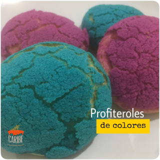
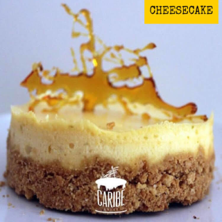

Nuevas golosinas

Profiteroles
Ideado con el proposito de agradar el paladar y la sensación visual.Profiteroles rellenos de una untuosa crema pastelera sabor vainilla.
Actualizado hace una semana

Cheesecake
Creado con los más finos ingredientes para ofrecer un postre icónico a nivel mundial, elaborado con el queso más fresco y con un delicioso tope de jalea de maracuyá.
Actualizado hace una semana